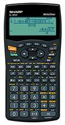
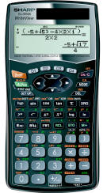
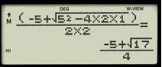

WebCal 計數機網頁
SHARP EL-W531 及 EL-W506 Write View 簡介
|  |  |  |
| EL-W531 | EL-W506 | 自然顯示輸入算式及答案顯示 |
Sharp EL-W531 及 EL-W506 Write View 系列計算機較特別之處是可以選用數學自然顯示 (Natural Display)， 特點與Casio ES及Texas Instruments MultiView 系列計算機相似，亦即是數值為分數或平方根等算式或符號，都可以切換 為一般教科書的排列位置、顯示形式(輸入算式及答案)，提供更加直覺式的操作介面，因此更容易了解 及學習，我相信未來新一代的科學函計數機的主流將會採用數學自然顯示，以取代舊款較多缺點的A.D.A.L. 或 S.V.P.A.M.計算機。不過由於EL-W531及EL-W506使用圓點顯示形式(Dot matrix)，所以不會獲得香港考評局接納為中學會考准用計算機。 兩部計算機以EL-W506計算功能較多，除了EL-W531的功能外，還有微積分、複數、解方程式、矩陣、List、單位轉換、科學常數、聯立二元一次方程、聯立三元一次方程、一元二次方程及一元三次方程等等功能， 另外EL-W506還有四個公式記憶(Formula memory)，所以亦可以編寫一些簡單的程式，總括來說，Sharp EL-W506亦算是一部功能相當不錯的科學函數計算機。
與SHARP EL-506V會考計算機比較，EL-W531及EL-W506除了數學自然顯示外，有以下特別之處:
˙有四行顯示，在LINE模式下，有三行輸入算式，算式長於三行，算式的部份才會被隱藏，對於查閱、修改及核對輸入算式較方便及容易。
˙計算三角函數時，若果角度是15˚的倍數，若答案可以用平方根表示。
˙計算對數問題時，可以設定不同對數底的值。
˙回歸分析方面增加了普通指數回歸計算(y=a•bx)。
˙基數功能方面，令人較感意外的是加入了五進數(Pental)，大多數的科學函數計算機都是沒有五進數，五進數的應用似乎較少，不知外國某些數學課程是否包括五進數。
˙數學操練及乘數表(Math Drill and X Table)，這個功能主要用作操練兩數間的加、減、乘及除四則運算，操練的題目並不太難，加、減運算的兩數範圍是0至20整數，乘數運算兩數範圍0至12整數，除數運算被除數及除數範圍分別是1至144及1至12整數，而答案亦是整數，所以EL-W531亦很適合較低年級學生使用，作為訓練四則運算的輔助工具，或許有這個賣點可以增加這部計算機的市場佔有率。
˙四個定義記憶 Definable memory (D1-D4)，這個功能可以儲存計算機上所有的函數或運算功能，透過這個功能，可以將常用及按鍵次數較多的功能儲存(即快速鍵)，因而可以簡化操作及提升使用計算機的效率。
EL-W506功能較多，與EL-506V比較，還有以下特別之處:
˙四個公式記憶(Formula memories)，比EL-506V多兩個公式記憶。
˙有矩陣及List功能，矩陣最大為4×4矩陣，List則最多可以有十六項。
˙有方程式計算功能，這個功能使用牛頓法求方程式的根。
˙可以計算一元二次方程及一元三次方程的根。
˙可以儲存用者名稱，最多32字符，亦即可以輸入26個英文字母。
WebCal計算機索引